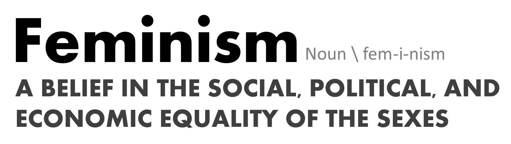

- Criminal harassment: commonly referred to as stalking
- Equity: freedom of bias, privilege, or favouritism
- Intersectionality: the complex way in which the effects of multiple forms of discrimination combine, overlap, or intersect
- LGBTQ+: stands for Lesbian, Gay, Bisexual, Transgender, Queer, and more
- Marginalization: to relegate to an unimportant or powerless position within a society or group
- Misogyny: the dislike or shaming of women
- Patriarchy: control by men of a disproportionately large share of power and influence
- Person of colour: a non-white person
- Prejudice: an adverse opinion formed without sufficient grounds or knowledge
- Privilege: a right or immunity that is of benefit, advantage, or favour
- Racism: a belief that a particular race is superior to others; prejudice or discrimination based on race
- Sexism: prejudice or discrimination based on gender or sex
- Spousal violence: violence or other forms of abuse done by one person against another in marriage
- Stereotype: a standardized mentality about a group that represents an oversimplified opinion, a prejudiced attitude, or judgement
- Systemic oppression: the continued mistreatment of an a social identity group, supported and enforced by society and its institutions
- TERF: Trans-Exclusionary Radical Feminist; a type of feminist who is anti-transgender, and claims that transgender women are not truly women
- Transgender: a person whose gender identity differs from their assigned gender at birth
- Transphobic: a person who dislikes or fears transgender people, solely because they are transgender
- Violent victimization: becoming a victim of a violent crime
- White feminism: feminism that is exclusive or inconsiderate of people of colour